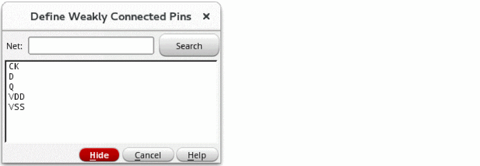

Defining Weakly Connected Pins
To define a set of pins on a net to be connected externally because the internal physical connection has a significant resistance:
-
In the layout window, choose Connectivity – Define Pins – Weakly Connected.
The window prompts you to click a pin figure to select a net. -
To select the net that includes the pins you want to connect externally, click a shape on that net.
You can select a net by selecting a shape on the canvas before you choose the Connectivity – Pins – Weakly Connected command.
Flight lines appear, connecting only the pins of the net you chose. Dotted flight lines are used to show the internal high-resistance path between the pins. If incomplete nets are being displayed, the other net flight lines disappear. Flight lines are visible in Layout XL and higher tiers.
Selecting a net does not make a connection change.
The window prompts you to select two or more pins to be connected. -
To select the pins you want to connect, click one or more pins in the selected net.
You can click a pin,Shift+click subsequent pins, or select pins by area by clicking and dragging with the right mouse button.
Clicking on the pins of the selected net makes the connection change.- If you select a single pin, the other pins are not deselected, and that pin is connected externally to the current selection of externally connected pins.
- If you select multiple pins, those pins are connected externally to all other externally connected pins on the net.
When you click pins to be externally connected as weak-connects, the net flight line display immediately changes to show the new information.
You can also use the Define Weakly Connected Pins form to select a net. -
Press
F3to open the Define Weakly Connected Pins form, while the Weakly Connected Pins command is active.
 - Type the name of a net in the Net field or click net names in the list box of the form to select them.
-
On the canvas, click the pins you want to define.
When you add or remove pins to be weakly connected, the net flight line display changes immediately to show the new information.
To select more than one net at a time to work on, you can:- Choose multiple nets in the form.
- Use drag by area when the command line prompts you to select a net.
You must define weak pin connectivity within a net. You cannot define weak pin connectivity between nets. -
When you have finished, press
Escto end the command.
When you define pins as weakly connected, the router routes them within the design.
Using the right mouse button, you can switch from the Weakly Connected command to the Must Connect command, to the Strongly Connected command, to the Pseudo Parallel Connect command. Must Connect pins must be changed to Strongly Connected before being changed to Weakly Connected.
Related Topics
Define Net/Pin Connections Form
Return to top